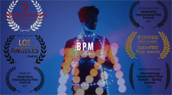

|
Wild Project Presents
EVQ Film Festival: Opening Night Screenings
Featuring Future Cult Classics & Music Videos
August 21 @ 7PM
|
|
DELICIOUS PERSPECTIVE
direction by Antonio Padovani, written by Antonio Padovani & Cristiana Regini
11 mins (Italy)
Anna is coming: finally, a night together, a night awaited for so long, but the anticipation now makes her uneasy and scares her. Something is troubling her. The fear of breaking a taboo? Feelings of inadequacy? Her conscience? An undefined sense of guilt? All things that can kill. Literally.
|
|
|
|
HONOR COUNCIL
direction by Scott Simonsen
12 mins (US)
trailer: vimeo.com/227989462
After beating up the school bully with dildo nunchucks, Wren, who dresses as a girl from the waist down and a boy from the waist up, was put on trial with threat of expulsion. As he is tried by the honor council it becomes clear that the situation is not so black and white and that everyone must adjust see through different eyes to understand what is right.
|
|
|
|
JUNKIE DOCTORS
direction by Rob Roth, written by Michael Cavadias
17 mins (US)
trailer: vimeo.com/62339771
An apparently normal little boy is actually two conjoined twins, joined so seamlessly that he appears to be just one boy. “Junkie Doctors” is a short film directed by Rob Roth and written by Michael Cavadias. The film features Will Janowitz (Sopranos, Boardwalk Empire, Taking Woodstock), Michael Cavadias (Wonderboys, The Mystery of Claywoman, Girls), Cole Escola (Difficult People, Mozart in the Jungle), Erin Markey (A Ride on the Irish Cream, Our Hit Parade), Angela DiCarlo (The Mad World of Miss Hathaway) and Mauro Von Waldenberg.
|
|
|
|
LOST SAILOR AND THE UNTAMED SISTERS OF LESBOS
direction by Jeremy von Stilb, Tish Sparks
8 mins (US)
A young Navy seaman is drawn into a mystical journey of self-discovery when he hears a mysterious siren's song.
|
|
|
|
GANG GIRLS 2000
direction by Katrina Del Mar
27 mins US
trailer: vimeo.com/20035737
Four foxy girl gangs tear it up on the streets of the Lower East Side, and rumble on the beach at Coney Island. In Glorious GlitterVision! In Luxurious Leatherama! What these girls do you will Not Believe! Bike riding ChicKettes! Truck driving Sluts! ! Yes, ladies and gentlemen this is IT! The Cinematic Triumph of Katrina del Mar’s unfettered imagination! Shot in glorious super 8mm on the rough streets of New York City! A cast of 30 beautiful women driving fast cars, wearing tight pants, eating candy, fighting, kissing and riding horses! A World without men featuring four Dangerous and Foxy Gangs!
|
|
|
|
2000 YEARS OF DRAG: A MUSICAL ODYSSEY
direction by Dorian Electra, Imp Queen
4 mins (US)
Dorian Electra is joined by drag queens Imp Queen, Lucy Stoole, Eva Young, The Vixen, and trans rapper, London Jade to take us through the history of drag to show how it has shaped the way we can redefine gender and create who we are.
|
|
|
|
BORN TO LOVE YOU
direction by Antone Martinez
4 mins (US)
In the music video for L|M|T's "Born To Love You", directors antone and Bambi Turner explore themes of conflict, connection and memory through modern dance choreographed by Shaunna Vella. When opposites attract the results can be explosive.
|
|
|
|
BPM
direction by Julia Rose Camus
6 mins (US)
A young college student learns to balance his work and social life while navigating questions of identity and sexuality by repeatedly losing and finding himself in EDM beats.
|
 |
|
|
INTIMACY / INTIMITÄT
direction by Susanne Steinmassl
3 mins (Germany)
Single INTIMITÄT from Candelilla’s 2017 album CAMPING via Trocadero / ZickZack Records
|
|
|
|
MORE LOVE: LESS PREPACKAGED BULLSHIT
direction by Neelu Bhuman
1 mins (US)
The following Assata Shakur poem describes this film:
let’s make a future, lets make this pretty,
make it good, make it sweet, make it juicy,
make it real, make it, you know something
other than pre-packaged bullshit...'
by Assata Shakur
|
|
|
|
TGF: MARATHON GAY SEX FOR MANLY MEN
direction by Johnny Chiba
3 mins (NYC)
Kneepad Nikki, Doc Octocock and Joe Testículo created TFG’s self titled album during the summer of 2015. Dicks were sucked, bagels were eaten and hits were created. The lead single, ‘Marathon Gay Sex For Manly Men’ was recorded first; followed by 9 other homoerotic hymns. Joe explains, ‘I saw potential audiences for TFG that Nikki was unable to see; queercore, grindcore, electronic music, even Howard Stern fans. I also pointed out the similarities between TFG and the movie Bruno, which made millions of dollars for its studio and star. We’re not aiming that high; but the money coming in from downloads and streaming should cover our lube and condom bills for the year.’
|
|